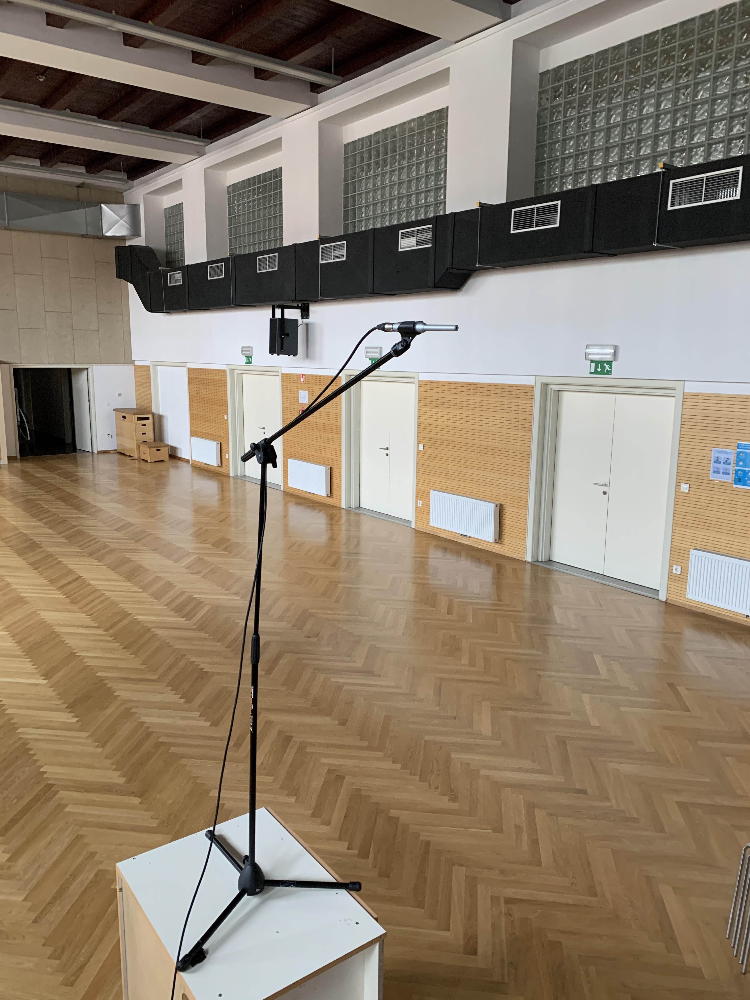
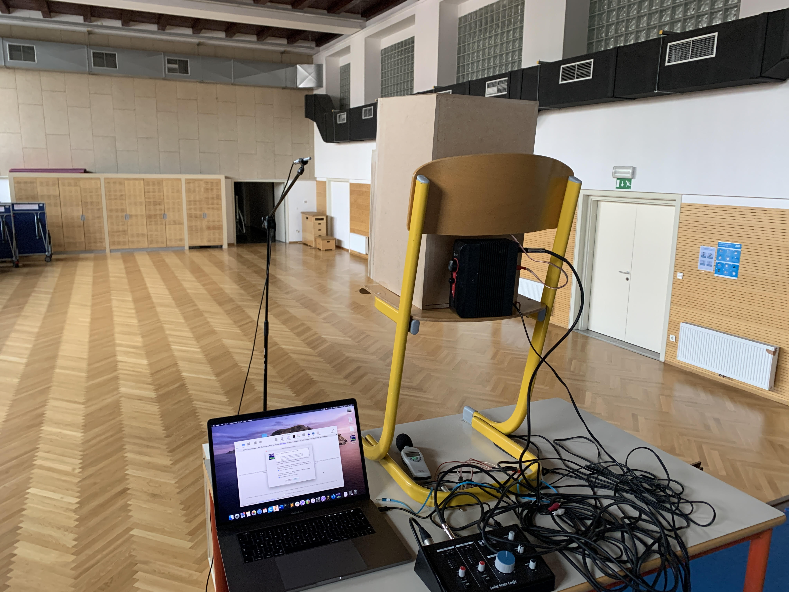
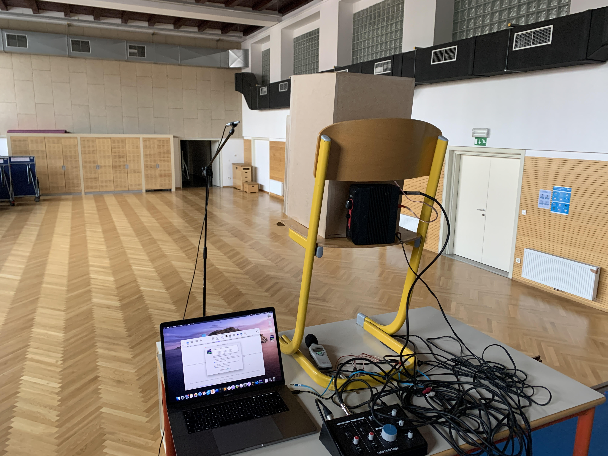
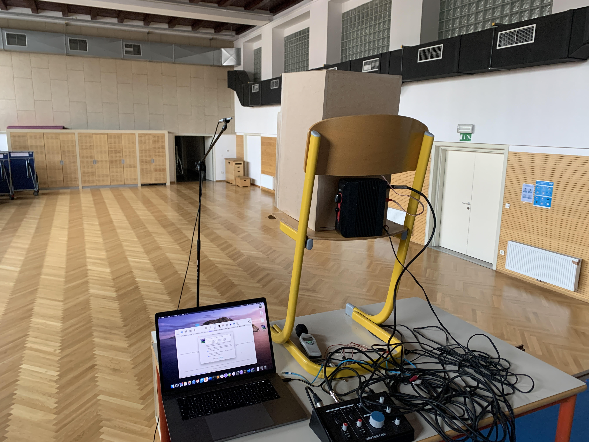

PROTOTIP 2
Na podlagi meritev prvega prototipa smo se odločili, da pripravimo nov prototip škatle, ki bo upošteval t.i. akustični zamik. Izmerili smo, da bi moral biti nizkotonski zvočnik premaknjen naprej za 24 mm glede na visokotonski zvočnik. Odločili smo se za stopničasto sprednjo ploščo, saj je tako najlažje nizkotonski zvočnik premakniti naprej. Narisali smo 3D model novega zvočnika - dobili smo nekaj novih dizajnov, ki jih bomo preizkusili. Poleg tega smo se odločili, da bomo nov zvočnik izdelali malce drugače, zato smo s šolskim 3D tiskalnikom zdelali kotnike izključno za lažjo sestavo novega zvočnika, notranje ojačitve pa smo izdelali s šolskim CNC rezkarjem. Novi prototip ima stopničasto sprednjo ploščo, ki omogoča boljši fazni odziv.Prototip 2 je izdelan.

V šolski delavnici smo pomerili impedančni odziv. Pri prejšnjih meritvah smo se naučili, da bass reflex cev impedančni vrh razdeli na dva, minimum ustreza frekvenci bass reflex cevi. Novi prototip smo tako "uglasili" na frekvenco, pri kateri sta oba vrha simetrična. Rdeča krivulja prikazuje impedanco (leva os), zelena pa fazni zamik (desna os).
Meritev je precej slaba (šum), saj so pogoje za meritev v delavnici slabi. Meritve bomo ponovili v gluhi sobi Fakultete za elektrotehniko Univerze v Ljubljani.


 

